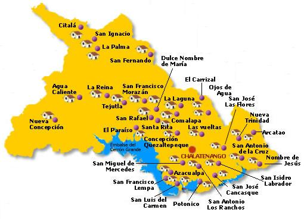

Chalatenango
Chalatenango es una ciudad y municipio de El Salvador, siendo la cabecera del departamento homónimo. El nombre "Chalatenango" proviene del náhuat "chal(a)-ten(a)-nko", que significa “Valle de arena” o “Casa de arenas”.
Geográficamente, la ciudad se encuentra a una altitud de aproximadamente 390 metros sobre el nivel del mar y cubre un área de 131.5 km².
Dato curioso: Según el censo oficial de 2007, Chalatenango tenía una población de aproximadamente 29,271 habitantes. El departamento es conocido por sus montañas, ríos cristalinos y por ser una zona rica en historia precolombina, además de albergar importantes sitios naturales como la Poza del Río Nunuapa.
